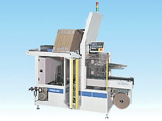

KBC-92型 段ボール製函機

特 徴
同機は，マガジンから段ボールを１枚ずつ抜き出し，製函，底面をテープ貼りと，一連の動作を高速処理する自動製函機です。姉妹機としてホットメルトタイプのKBC-91型、KBC-92型と同じく、底面をテープで接着する大箱対応型のKBC-97型もあります。
■
極めてコンパクト設計で段ボール供給・操作・メンテが片側で全て行えますので設置場所に困りません。
■
毎分20ケースの高速能力で生産量に合わせたゆとりある運転が可能です。
■
マイコンにデータ登録することにより（99種類までプリセット可能）様々な箱寸法に対応でき，サイズチェンジを自動で行います。
■
単体でも，ラインシステムとの連動等，様々な業種に対応し，作業効率の円滑化に貢献いたします。
仕 様
■
使 用 例
各種ダンボール製函
■
能 力
20ケース/分 （ケースサイズにより異なる）
■
マガジンストック量
80枚 （厚さにより異なる）
■
使用電力
三相，200V, 2KVA, 10A
■
使用空気量
165Nl/分, 500KPa （5kgf/c�屐�, ２次側
■
機械寸法
幅 945mm
長さ 1,990mm
高さ 1,800mm
■
制御・表示
マイコン制御，LCD （液晶） 表示
■
正味重量
430kg
■
周囲環境
温度0〜40℃，湿度10〜90％RH （結露無きこと）
■
使用テープ
クラフトテープ，PPテープ
■
テープ幅
38〜50mm
■
テープ外径
φ320mm以下
HOMEへ戻る
Copyright (C) KAWASHIMA PACKAGING MACHINERY CO.,LTD. All Rights Reserved.